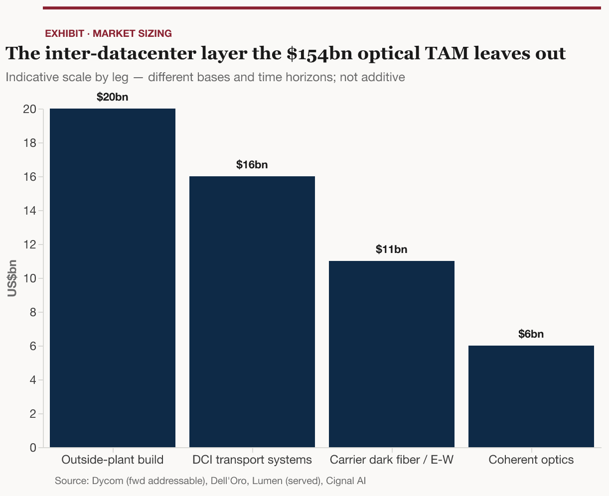

A landscape (not a ranked recommendation) of the enabling layer the headline optical TAM excludes: coherent transport and silicon, dark-fiber reconditioning physics, outside-plant construction, and the test, observability, and sensing tier that watches the inter-datacenter network.
This report is written for an investor who already knows the headline AI-infrastructure story — a trillion dollars of data-center capex, GPUs sold out, optics replacing copper inside the rack — but who wants to go one layer deeper than the Networking & Interconnect primer (2026-05-25) took two of its eight stack layers. That primer defined DC-to-DC scale-across (Data Center Interconnect, "DCI") and dark fiber / outside-plant in roughly ten lines each. This report opens both up.
The deliberate framing: this is not a report on the people who make the glass and the cable (Corning, Prysmian, the Japanese fiber majors — the last of which is a separate study). It is a report on the enabling layer — the coherent transceivers and the silicon inside them, the optical-transport systems that light the fiber, the construction crews that install and splice it, the instruments and software that test and observe it, and the specific question of what has to be done to decades-old dark fiber to make it carry today's coherent DCI traffic. By the end, the reader should be able to name the layers of the inter-datacenter optical stack, the load-bearing tradeoffs in each, and the public-and-private companies that sit in them across the US and Europe.
A note on stance: this is a landscape, not a stock call. It maps the terrain and the players and ties them back to an AI-infrastructure investment thesis; it does not rank names to buy.
§2 summary. The most-cited number in AI optical networking — Goldman's ~$154bn 2028 optical TAM — is built entirely from the dollar content inside the fence (the links within and across racks in a campus), and by construction excludes the fiber, optics, and construction between buildings. That excluded layer is not a rounding error: each of its legs — inter-DC transport equipment, coherent modules, leased dark fiber, outside-plant construction — is already a multi-billion-dollar annual market in its own right, growing off a faster base and from a less-mapped starting point. The legs sit on different measurement bases and horizons and cannot be summed into one clean total, but each is large, and together they describe a real second front of optical spend.
Goldman Sachs's April 2026 note "Optical Networking: the next mega trend in AI infrastructure" sizes the optical-networking opportunity at US$154bn in 2028. That figure anchors nearly every conversation about AI optics — and it is almost always quoted without its scope. The TAM is constructed, in Goldman's own words, from "the connection content value of each rack" multiplied across its forecast shipment of Vera Rubin / Rubin Ultra racks. Goldman's own Exhibit 8 is titled "Scale up / Scale out TAM opportunities": 69% (US$106bn) is scale-up (the links within a rack or super-node) and the balance is scale-out (the fabric across a building), with co-packaged optics alone contributing US$91bn (59%) of the total. Both tiers are inside-the-fence. Goldman defines a third tier — scale-across, "connecting servers across data centers in different locations" — but confines it to an appendix exhibit with no TAM line item attached. A per-rack-content methodology structurally cannot capture the fiber strung between campuses, the coherent optics that drive it, or the trench it sits in.
That is the white space this report occupies. It can be sized, roughly, by assembling the legs the headline figure leaves out:

Two cautions keep this honest. First, these legs cannot be summed — the coherent modules (~$6bn) sit physically inside the transport-equipment figure (~$16bn), Lumen's carrier-served "East-West" revenue overlaps that equipment, and the Dycom figure is a forward addressable TAM on a different horizon. Adding the bars would double- and triple-count; the exhibit shows the shape of the excluded layer, not a total. Second, the market-data houses disagree materially by scope: Cignal AI's ~US$25bn (optical components), LightCounting's US$26bn (AI-cluster Ethernet transceivers plus co-packaged optics, rising toward US$100bn by 2030), and Dell'Oro's US$16bn (transport systems) are measuring three different things, and the gap is wide enough that any single headline must travel with its definition attached. The disagreement is itself the finding: this is an under-instrumented market, which is precisely why it is interesting.
The rest of the report walks the stack that fills that white space, from the demand driver down to the trench.
§3 summary. AI training clusters have outgrown the power and floor space of any single campus, so hyperscalers now stitch multiple buildings — and multiple metros — into one logical machine. That forces a new tier of networking, "scale-across," whose defining physical regime is the 100-to-1,000-kilometre link: too far for the copper and short-reach optics that handle in-building traffic, and newly economic to build because the buyers are the richest companies on earth.
The old flow. Until recently, an AI training run lived inside one data center. The networking problem was "scale-up" (wiring GPUs into a rack or super-node with copper and, increasingly, co-packaged optics) and "scale-out" (connecting racks into a cluster across a building with pluggable optical transceivers). Both are inside-the-fence problems, and both are what Goldman's $154bn measures.
The new flow. Frontier models now demand more power than a single site can draw. Microsoft has begun linking its "Fairwater" AI data centers in Wisconsin, Atlanta, and elsewhere into a single "AI superfactory" over a dedicated AI wide-area network; Meta states that its GPU-cluster requirements grew beyond what a single data-center campus can hold, so it now sources fiber and, in most cases, constructs its own inter-DC plant; and Google's framing — "the WAN is the new LAN and the continent is the data center" — captures a network sustaining roughly 10× the WAN traffic of a few years ago. The reach taxonomy now runs scale-up → scale-out → scale-across, and the industry has converged on that third term: it appears in Dell'Oro's market taxonomy, Ciena's 10-K growth strategy, and Cisco's and Ribbon's product literature alike. (The parallel 2026 Optical Compute Interconnect MSA — AMD, Broadcom, Meta, Microsoft, NVIDIA, and OpenAI — addresses optics inside the rack, the scale-up tier, and is therefore outside this report's scope.)
What changed, quantified. Scale-across has a physical signature distinct from classic DCI. Where traditional metro DCI ran point-to-point at ≤120 km, scale-across is defined by hyperscalers as the 100-to-1,000-kilometre regime — connecting buildings and metros, not just rooms — and that distance band is what dictates the technology (coherent, amplified, dispersion-managed) covered in the rest of this report. The demand behind it is the same demand behind the whole AI-capex story: hyperscalers collectively raised capital-expenditure guidance to ~US$718bn, up roughly 70% year-over-year, as cited on Dycom's March 2026 call. Optics is a low-single-digit percentage of that, but the inter-DC slice grows faster than the average because each new multi-site cluster creates inter-building links that did not exist before.
The lit-versus-dark decision — the spine of the buyer map. Crucially, the inter-DC network is bought two different ways, and which way a buyer chooses determines which companies in this report it pays:
This split is why the same report must cover both a coherent-DSP vendor and a fiber-splicing labor shortage: the buyer who owns the network touches every layer of the stack.
§4 summary. At each end of an inter-DC link sits an optical-transport system that turns data into modulated light and packs dozens of wavelengths onto a fiber. This is a concentrated market — Ciena, Nokia (now including Infinera), and Cisco (via Acacia) lead it — that grew 10% to $16bn in 2025 on DCI demand, and it is being reshaped by two forces: coherent optics shrinking from chassis into pluggable modules, and the network itself disaggregating into mix-and-match "open line systems."
The transport system is the equipment that takes a router's electrical signal, encodes it onto a laser using coherent modulation (which carries far more bits per wavelength by manipulating the light's phase and amplitude, not just its on/off intensity), and multiplexes many such wavelengths onto a single fiber pair. The market is led by a handful of vendors. Dell'Oro's 2025 ranking puts the top five optical-transport system makers as Huawei, Ciena, Nokia, ZTE, and Cisco — and for DCI specifically, the leaders are Ciena, Nokia, and Cisco. The market grew 10% to US$16bn in 2025, with the third quarter alone up 15% year-over-year and cloud-service-provider purchases up 58%.
Ciena (CIEN) is the Western pure-play and the share leader. Its WaveLogic 6 Extreme coherent engine is the first to run at 200 Gbaud and to deliver 1.6 Tb/s on a single wavelength for metro networks, a capability the company says held a more-than-one-year market lead. Its WaveLogic 6 Nano powers 400G–800G coherent pluggables, including interoperable 800ZR for DCI. Fiscal-2025 revenue was US$4.77bn, up 19%, with direct cloud-provider revenue up more than 50% and Reconfigurable Line System sales up 79% — and the company described itself as "essentially sold out." Ciena holds nearly 50% of the US optical market on the strength of WaveLogic 6 and its ZR pluggables.
Nokia reshaped the competitive map by acquiring Infinera for ~US$2.3bn (US$6.65/share), closing February 2025, creating a combined optical business of more than US$3.6bn in turnover and ~1,000+ customers and explicitly aimed at the fast-growing webscale/DCI segment. The deal brought Nokia two assets that matter for this report: Infinera's coherent engines (the ICE6 at 1.6 Tb/s per engine and the 5nm ICE7, whose 1.2 Tb/s per-wavelength ceiling underpinned a live Zayo trial at 1 Tb/s over 1,391 km) and an in-house indium-phosphide photonic-chip fab in Sunnyvale that vertically integrates the lasers and modulators. Nokia's 1830 GX platform and its ICE-X 800G "multi-haul" pluggable round out the line.
Cisco, through its 2021 Acacia acquisition, leads the move that is quietly redrawing the whole market: collapsing the separate IP-router and optical-transport boxes into one. Its Routed Optical Networking (RON) architecture plugs Acacia coherent ZR/ZR+ modules directly into routers (an approach called IP-over-DWDM), and Cisco reports that more than 70% of coherent ports are now pluggable rather than embedded in a chassis, with 450+ RON customers including every top hyperscaler. Acacia's CIM8 was the industry's first 1.2 Tb/s coherent multi-haul pluggable, and its 1.6T ZR roadmap runs at 240 Gbaud. Cisco has also pushed its Silicon One P200 into purpose-built "scale-across" DCI routers aimed at neoclouds.
Two smaller transport names matter for the US-and-EU map. Adtran (Huntsville, Alabama; majority owner of the Munich-listed Adtran Networks SE, the former ADVA) posted Q4-2025 revenue of US$291.6m at the holding level and €130.2m at the German optical subsidiary, selling the FSP 3000 DWDM line and Oscilloquartz timing. Ribbon Communications (RBBN), which absorbed ECI Telecom, sells the Apollo optical platform across DCI, metro, long-haul, and submarine, and guides to US$840–875m of FY2026 revenue.
The disaggregation force. Underneath the vendor rankings, the architecture is unbundling. An open line system (OLS) separates the optical amplifiers and wavelength-routing layer from the transponders that generate the light, so an operator can buy each from a different vendor. As of 2025, roughly half of network operators have deployed or plan to deploy multi-vendor disaggregated OLS, and disaggregated-WDM revenue grew ~40% in the year. Hyperscalers drove this — disaggregation is how they multi-source and avoid lock-in — and it is why a pure-component vendor (a DSP maker, a laser maker) can now sell into the network without going through a single systems incumbent. That unbundling is the bridge to the next layer: the coherent pluggable and the silicon inside it.
§5 summary. The defining shift of this cycle is coherent optics migrating out of the chassis and into a plug-in module the size of a thick USB stick — a "ZR" pluggable. That move expands the buyer base and the unit volumes (good for module makers) while commoditizing the box (bad for systems margins), and it concentrates the defensible value into one component: the coherent digital signal processor. The DSP is a tight oligopoly, the laser and modulator beneath it are a materials race, and the single largest risk to the merchant vendors is a hyperscaler — NVIDIA — bringing the DSP in-house.
The pluggable shift. A decade ago, coherent optics lived inside large, vendor-specific transponder chassis. Today the same capability ships as a pluggable transceiver — a QSFP-DD or OSFP module — that drops into a standard router or switch port. Cisco reports more than 70% of coherent ports are now pluggable, and the industry standardized the interfaces so modules from different vendors interoperate: the OIF's 800ZR Implementation Agreement (October 2024) defines a single-wavelength 800G coherent line interface at 118 Gbaud using DP-16QAM modulation with oFEC (open forward error correction), and an OIF plugfest demonstrated eight vendors' modules all carrying 800 Gbps over one DWDM line system. The OpenZR+ multi-source agreement extends interoperable coherent down to 100–400G with regional and long-haul reach. The naming follows reach: 400ZR is the short-reach DCI workhorse (~80–120 km), 800ZR steps up the rate, ZR+ variants push to regional and long-haul distances, and 1600ZR is emerging — with reach, not rate, the binding constraint at each step.
This shift is double-edged, and the tension is the investment story of the layer. Pluggables expand the market: they let any router OEM and any neocloud buy coherent capacity without a systems contract, which is why pluggable coherent will exceed 60% of telecom coherent bandwidth by 2026 and why 800ZR is forecast to ship more than 200,000 ports in 2026. But they also commoditize the box — when the coherent function is a standards-compliant plug, the systems vendor's chassis loses differentiation. Value migrates to whoever makes the plug, and within the plug, to whoever makes its brain.
The DSP oligopoly — where the defensibility lives. The coherent digital signal processor is the silicon that encodes data onto the light, decodes it at the far end, and — critically for §6 — electronically cleans up the distortions the fiber adds. It is a brutally hard chip to build, and the market reflects that. At 400G, two merchant vendors — Acacia (now Cisco) and Marvell (via its Inphi acquisition) — dominated; at 800G the field widened to include those two plus the captive DSPs inside Ciena (WaveLogic) and Nokia/Infinera. The competitive dynamics are vivid:
The single largest risk to this oligopoly is captive supply. NVIDIA is reportedly developing its own 1.6T DSP, intended to fulfill roughly half of its internal networking demand in-house — a low-confidence, single-source signal, but a structurally important one: the richest buyer building its own brain is exactly how merchant component markets get hollowed out. The same Marvell engineers describe a "DSP-to-optics pendulum," in which value swings between the processor and the optics depending on which is the bottleneck — a useful reminder that today's DSP scarcity premium is not permanent.
The laser and the modulator — the materials race beneath the DSP. A coherent module also needs a precise, tunable laser (the light source and local oscillator) and a modulator (which imprints data onto the light). Two materials contend:
The module makers and the manufacturing chokepoint. The companies that assemble these parts into shippable modules are where the volume revenue lands. Coherent Corp (COHR) posted calendar-Q1-2026 revenue of US$1.81bn with its Datacom & Communications segment at US$1.36bn, driven by 800G/1.6T transceivers. Applied Optoelectronics (AAOI) hit a record US$151.1m quarter (+51%) and is ramping 800G/1.6T capacity from ~100,000 modules a month exiting Q1-2026 toward 650,000/month by end-2026 and 930,000/month by end-2027. And Fabrinet (FN) — the contract manufacturer behind much of this capacity — sits at the chokepoint the whole layer now feels: across coherent optics, component and input availability has become the binding constraint, not design (Lumentum alone is under-shipping indium-phosphide demand by 25–30%). One independent estimate of 2026 AI-DC pluggable revenue puts Coherent at ~US$5.5bn, Lumentum at ~US$3.2bn, and Fabrinet at ~US$2.6bn. Smartoptics illustrates the long tail: its DCP-802 flexponder converts ordinary "gray" client optics to coherent DWDM, a small-vendor niche enabled by the disaggregation trend.
So what. The pluggable transition simultaneously enlarges the prize and erodes the moat. The module assemblers (Coherent, Lumentum, AOI, Fabrinet) ride a genuine volume surge — coherent modules were ~US$6bn in 2025, and total high-speed datacom module shipments hit 42 million units. But the durable economics sit in the scarce inputs — the DSP oligopoly and InP/TFLN supply — and both are exposed: the DSP to hyperscaler captive silicon, the laser to a capacity race. The investor's question for this layer is not "is volume growing" (it plainly is) but "who keeps the margin when the plug is a standard." That question routes to the components nobody else can make yet.
§6 summary. Hyperscalers are leasing and buying fiber that was buried decades ago. The reason they can light it for modern coherent traffic at all is that the coherent DSP electronically erases the dominant distortion — chromatic dispersion — which let the industry rip out the inline compensation huts that direct-detection systems needed. But there is one distortion the DSP cannot fully fix — polarization-mode dispersion — and on pre-1994 glass it sets a hard ceiling that pushes the highest-rate traffic onto newly overbuilt fiber. The economics of recondition-versus-overbuild, not the physics alone, decide where the construction dollars flow.
This is the section the question is really asking: what has to be done to old dark fiber to make it usable for DCI? The answer is a chain of physics and economics, and it begins with two distortions.
The two enemies: chromatic and polarization-mode dispersion. Chromatic dispersion (CD) is the spreading of a pulse because different wavelengths of light travel at slightly different speeds in glass; standard G.652 single-mode fiber accumulates CD at ~16–18 ps/nm/km at 1550 nm. Polarization-mode dispersion (PMD) is subtler and more dangerous: a fiber's two polarization states travel at slightly different speeds because the glass is never perfectly round or stress-free, and the delay accumulates stochastically with the square root of distance. Modern fiber holds PMD to ~0.1 ps/√km, but fiber installed before the mid-1990s runs 1–10 ps/√km — ten to a hundred times worse — because PMD was not even a measured parameter when it was drawn. And the tolerance tightens with speed: the maximum acceptable PMD coefficient falls roughly inversely with bit rate — under ~0.5 ps/√km is fine for a 10G signal, but high-rate coherent demands far less — so a span that was perfectly serviceable in the 10G era can be unusable for high-rate scale-across traffic without ever physically changing. This is the single most important fact about legacy dark fiber.
Why the DSP rescued old fiber — and killed the compensation huts. In the pre-coherent era, CD had to be cancelled physically, with dispersion-compensating modules installed at every amplifier site along the route — expensive, lossy, and a maintenance burden. The coherent receiver changed everything: its DSP undoes CD in the digital domain. A landmark demonstration electronically compensated 107,424 ps/nm of chromatic dispersion over 6,400 km, and a polarization-diverse fractionally-spaced equalizer can compensate very large amounts of CD and first-order PMD. The consequence is structural: coherent optical networks need no dispersion compensation on the optical path at all, which let operators rip out the inline compensation modules — the line system is now just amplifiers and wavelength-routing. That simplification is precisely what makes lighting old glass economic.
Where it stops — the PMD ceiling. Here is the boundary that makes this section more than a victory lap. PMD is not fully compensable in the DSP. On high-PMD fiber, coherent links suffer real, sudden outages — fast changes in the state of polarization, abrupt PMD jumps, polarization-dependent loss, and loss of orthogonality between the two polarizations — and all seven of these failure modes worsen as the fiber's PMD rises. The budget is a fraction of the symbol period. The rule of thumb for an uncompensated link is that the accumulated differential group delay (the time-split between the two polarizations) stay under ~10% of the symbol period; coherent DSP relaxes that by equalizing first-order PMD, but the tolerance still shrinks in absolute terms as the symbol rate climbs — a higher baud rate means a shorter symbol, so the same fractional budget buys fewer picoseconds (at the ~118 Gbaud of an 800G wavelength the symbol period is under 9 picoseconds, so the bare uncompensated budget is well under one picosecond — and the DSP's first-order-PMD equalization is what stretches that into a workable few-picosecond margin). Standards-compliant modern fiber (PMD ≤0.1–0.2 ps/√km) clears that easily; legacy high-PMD glass does not. That is why the highest-rate wavelengths run metro-only while 800G covers the long links — the fiber, not the transceiver, sets the limit — and why the highest-rate scale-across traffic increasingly demands new glass rather than reconditioned old glass.
Qualification — what you measure before you light. Because of all this, a dark-fiber lease triggers a formal characterization regime. ITU-T G.650.3 defines a two-tier test — basic loss and continuity for every link, full CD and PMD characterization for high-rate routes — and recommends the full battery specifically when a dark-fibre contract is signed, because once the fiber is lit and in service the operator may never get physical access to it again. Carriers publish hard acceptance budgets: Verizon requires end-to-end loss not to exceed 0.25 dB/km plus splice and connector allowances, with fusion splices under 0.25 dB; Telstra specifies 0.20 dB/km at 1550 nm and PMD ≤0.1. And when characterization flags a bad span, a distributed PMD test localizes it — in most high-PMD routes a segment shorter than 5 km causes more than 70% of the total PMD — so the operator can splice out one bad section rather than rebuild the whole route. This is the work that the test-and-measurement vendors in §7 get paid to do.
Amplification and regeneration — the in-line plant. Coherent's reach is set by optical signal-to-noise ratio, which means amplification strategy. Erbium-doped fiber amplifiers (EDFAs) are the workhorse, best to roughly 80–90 km between sites; distributed Raman amplification, which uses the transmission fiber itself as the gain medium, delivers a better noise figure and ~2.9× the reach. The tradeoff is power and real estate: a Raman pump draws ~10 W against ~80–100 W for a regeneration card, so adding Raman can delete an entire regeneration hut from a route — a meaningful capex and siting saving on long inter-DC spans. On aged plant, EDFA-only systems cap 100G at regional distances, while hybrid Raman pushes 100G past 4,500 km. Reconfigurable optical add-drop multiplexers (ROADMs) sit along the route to switch wavelengths in software.
Recondition versus overbuild — where the dollars actually go. The economics start heavily in favor of re-lighting existing fiber. Greenfield long-haul construction runs on the order of US$67,000–128,000 per route mile, the large majority of it civil works (trenching, conduit) — an older industry benchmark that is, if anything, light against today's labor costs — whereas leasing existing dark fiber costs US$15–275 per mile per month per strand with no construction at all; an ACG/Cisco study finds dark fiber plus coherent optics delivers ~46% lower three-year total cost than carrier Ethernet on long-haul links above 400G. A pure capacity upgrade is cheaper still — lighting the L-band alongside the existing C-band adds substantial extra capacity on the same fiber. And yet the AI wave is pouring money into new fiber: Lumen reserved 10% of Corning's entire global fiber output and is building roughly 130,000 route miles of new cable — at up to 4× the strand density — by reusing its existing (Level 3-era) conduit, which is what lets it build fast. The reason is the PMD ceiling above: the new glass is G.654.E, a low-loss, large-effective-area grade (≈0.156 dB/km, standardized November 2016) that beats legacy G.652.D (~0.21 dB/km) on both loss and reach, because G.652.D is reaching its limits for high-capacity long-haul. The synthesis: reconditioning lights the existing routes for moderate rates, but the marginal high-rate scale-across dollar increasingly funds new G.654.E overbuild — which is the demand that flows directly into the construction layer of §7.
Hollow-core fiber — the latency option. One further technology deserves mention because hyperscalers are already deploying it. Hollow-core fiber (HCF) guides light through an air core (refractive index ~1 versus ~1.47 for silica), so light travels ~47% faster, cutting latency ~30% — which for scale-across means data centers can sit ~50% farther apart at the same latency budget, expanding the siting footprint for a distributed cluster. Microsoft, via its 2022 Lumenisity acquisition, reported HCF loss of 0.091 dB/km — below the theoretical floor of solid silica, and named deployers now include Azure, euNetworks, Comcast, and BT, with broad availability estimated ~5 years out. HCF is not a reconditioning play; it is a reason some of the new overbuild is qualitatively different from the fiber it replaces.
§7 summary. This is the most "picks-and-shovels" layer of the report: the crews that build and splice the fiber, the instruments that qualify it, the software that watches it, and the sensing systems that detect a cut before it takes a route down. Two structural facts dominate. First, the construction layer is gated by a skilled-labor shortage — fiber splicers above all — that caps how fast the buildout can physically happen. Second, there is no public pure-play long-haul fiber builder, so exposure routes through diversified specialty contractors, a handful of test-instrument leaders, and an assurance-software segment that is only now becoming a real profit center.
The companies that physically trench, pull, and splice inter-DC fiber are US specialty contractors and European multi-technical services groups. Dycom (DY) is the purest US fiber-construction play: fiscal-2026 revenue of US$5.55bn (+17.9%), a record US$9.5bn backlog, and FY27 guidance of US$6.85–7.15bn. Dycom is explicitly building toward the hyperscaler opportunity, having acquired Power Solutions to add inside-the-fence data-center work; like its peers, it runs on master service agreements (MSAs) — recurring, multi-year, but volume-non-binding, so backlog is an estimate rather than a contract. MasTec (MTZ) is larger and more diversified — Q1-2026 revenue of US$3.83bn (+34%) and a record US$20.3bn backlog — and names its Communications segment plus data-center connectivity as a growth driver. Quanta (PWR) is bigger still (US$48.5bn backlog) but its telecom/fiber work is minor next to electric-power EPC. Centuri (CTRI) is instructive precisely because it is not leaning in: US$3.0bn revenue, 78% under MSA, primarily a gas/electric utility contractor that treats fiber as complementary inside data-center scopes (it built a 16-mile fiber-conduit run into Northern Virginia's "Data Center Alley" but is explicitly not building a standalone fiber business).
In Europe the structure is different and the trend is the opposite direction. Circet is Europe's #1 telecom-infrastructure services group and is pushing into the US, where its combination with KGPCo creates a ~US$3.1bn combined-revenue network-services player. SPIE (€10.38bn group revenue) is actually winding down its City Networks fibre unit and pivoting toward data-center building solutions; VINCI Energies' Axians (ICT ~19% of a €21.6bn group) and Eiffage Énergie Systèmes (€8.1bn, full FTTH outside-plant scope) round out the European set. The structural read is sharp: European pure-play fiber-construction demand is decelerating as mature fiber-to-the-home rollouts wind down, while US demand is accelerating off data-center and long-haul builds — so the DCI construction tailwind is a US-led story — though data-center connectivity is the one European segment still surging, with operators pushing large customers toward Nx400Gbps links even as consumer fibre work fades. Within the US it concentrates in a handful of names, with Dycom the closest thing to a pure proxy.
The construction layer has a hard governor: labor. The industry faces a net skilled-worker deficit of roughly 120,000 through 2032 (≈58,000 new fiber roles needed against ≈178,000 departures), and the single most acute shortage is fiber splicers — a competent fusion splicer needs 12–18 months of supervised training. Surveys find 45% of firms reporting project delays directly from the shortage and 92% struggling to fill roles. The constraint is compounded by materials: ribbon-fiber lead times sit in the 60+ week range. Against a forecast need to build ~92,000 new route miles just to connect data centers, this labor ceiling is the real limit on how fast the inter-DC network can be lit — and it is why the hyperscaler fiber commitments are measured in years. Lumen's Private Connectivity Fabric is the headline pipeline: it plans to add 34 million intercity fiber miles by end-2028 (to 47 million total), has disclosed ~US$5bn of PCF sales plus ~US$7bn in active discussions (a ~US$13bn total PCF opportunity), and has booked builds like 22,000 route miles for Microsoft. Sitting above the crews is a fragmented outside-plant design and GIS-software layer — IQGeo (KKR-owned, ~£333m revenue), VETRO FiberMap, 3-GIS, and Bentley OpenComms — that models routes, splice points, and conduit and drives crew dispatch.
Once fiber is built and lit, it must be qualified and watched, and this layer is more quantifiable — and more consolidated — than the construction layer.
Test and measurement instruments. Viavi Solutions (VIAV) is the public anchor: FY2025 revenue of US$1.08bn, of which the Network and Service Enablement segment (test, monitoring, assurance) was US$776.6m, up 10.6% — explicitly driven by fiber lab and production demand from the data-center ecosystem, with Q4 NSE up 14.8%. EXFO — taken private in 2021 at US$6.25/share — is a leading vendor in optical test, trusted across the major hyperscalers and top service providers, and ships the leading-edge instruments the 800G/1.6T transition needs: a 3.2T BER tester, industry-first 24-fiber testers for data-center builds, and an 800G coherent test platform spanning 100ZR–800ZR. Keysight (KEYS) rounds out the top tier with a US$3.73bn Communications Solutions Group (+9%), and Anritsu and VeEX supply 800G/1.6T bit-error-rate testers and handheld field units. A notable consolidation event sits inside this layer: Spirent was split between Viavi and Keysight — Viavi took the high-speed-ethernet, network-security, and channel-emulation lines, while Keysight acquired the rest (wireless test and assurance) for ~US$1.56bn, closing October 2025. The test layer is tightening into fewer, larger hands just as the volume of fiber to qualify surges.
Assurance and observability software. Watching a live inter-DC network is increasingly a software business, and the standout signal is that Ciena's Blue Planet became its own reportable segment with FY2025 revenue of US$115.5m, up 48.9%, and its first profitable year (US$31.2m segment profit, up from a loss) — adding two global cloud providers as Q4 customers. Blue Planet does multivendor service assurance and analytics; its peers are Cisco's Crosswork Hierarchical Controller (multilayer, multivendor assurance built on the acquired Sedona NetFusion) and Nokia's NSP / WaveSuite, whose closed-loop automation will, on a fiber cut or rising span loss, automatically launch an OTDR scan and localize the break. The open-source GNPy path-computation library (sponsored by the Telecom Infra Project) provides a vendor-independent way to plan optical routes, a counterweight to the proprietary stacks. The coherent transponders themselves feed this layer: modern units such as Cisco's NCS 1004 continuously report mean PMD, accumulated chromatic dispersion, and pre-FEC bit-error rate, so every endpoint doubles as a live fiber monitor streaming the very impairments §6 described. The investable point: assurance software is a higher-margin, recurring-revenue layer riding the same DCI demand as the hardware, and Blue Planet's turn to profitability is the first hard evidence it can stand on its own.
Fiber sensing — turning the cable into a sensor. A newer layer uses the fiber itself as a distributed sensor. Distributed acoustic sensing (DAS) fires light down a strand and reads the back-scatter to detect vibration — a backhoe near the route, an intrusion, or the acoustic signature of a developing fault — before it becomes an outage. Viavi's NITRO Fiber Sensing (a true-phase DAS interrogator with edge AI, ~100 km range) explicitly lists "data-center interconnect monitoring" as an application. The competitive set is led by Luna Innovations (LUNA) — which rolled up OptaSense and Silixa (the latter for US$21.5m) and posted a Q3-2025 quarter of US$37.1m (+24%) spanning optical-comms test and sensing — alongside AP Sensing, Sintela, and NEC. (A research note worth correcting: the DAS pioneer Fotech was acquired by BP, not Viavi, which built NITRO on its own technology.) The market is still small and mostly third-party-sized — subsea-cable DAS at ~US$1.4bn and undersea-cable monitoring at ~US$3.8bn — but IT and telecom already represent ~22% of fiber-optic DAS revenue, and the application to protecting irreplaceable hyperscaler routes is the reason it appears in this report.
The map below organizes the names by where they sit in the stack, US and Europe, public and private. It is deliberately light on the commodity cable and glass makers and excludes the Japanese fiber majors (a separate study). Tickers are given where public; "private" marks names tracked but not listed.
| Layer | Public (US/EU) | Private / other |
|---|---|---|
| Transport systems (the "box") | Ciena (CIEN), Nokia (NOK, incl. Infinera), Cisco (CSCO, incl. Acacia), Adtran (ADTN / Adtran Networks SE), Ribbon (RBBN) | 1Finity (Fujitsu); Huawei/ZTE (non-Western) |
| Coherent DSP | Marvell (MRVL), Cisco/Acacia (CSCO), Broadcom (AVGO); captive: Ciena, Nokia | NVIDIA captive DSP (in development) |
| Lasers / modulators / components | Lumentum (LITE), Coherent Corp (COHR) | HyperLight (TFLN, VC-backed) |
| Module assembly / manufacturing | Coherent (COHR), Applied Optoelectronics (AAOI), Fabrinet (FN) | Smartoptics; Eoptolink, InnoLight (Asia) |
| Carriers / lit-wavelength + dark fiber | Lumen (LUMN), Cogent (CCOI), Uniti (UNIT) | Zayo (EQT/DigitalBridge); EXA, euNetworks (EU) |
| OSP construction & field services | Dycom (DY), MasTec (MTZ), Quanta (PWR), Centuri (CTRI); SPIE, VINCI, Eiffage (EU) | Circet (EU #1); KGPCo |
| OSP design / GIS software | Bentley (BSY) | IQGeo (KKR), VETRO FiberMap, 3-GIS (Synchronoss) |
| Test & measurement | Viavi (VIAV), Keysight (KEYS), Anritsu (6754.T) | EXFO (Lamonde, private); VeEX |
| Assurance / observability software | Ciena Blue Planet (CIEN), Cisco Crosswork (CSCO), Nokia NSP (NOK) | GNPy (open-source / TIP) |
| Fiber sensing / DAS | Luna Innovations (LUNA), Viavi (VIAV) | AP Sensing, Sintela, NEC; Fotech (BP) |
§9 summary. An AI-infrastructure investment thesis holds that networking is the most-leveraged layer of the AI-data-center capex curve. This report argues the inter-datacenter sub-layer is the least-priced part of that bet — structurally excluded from the headline TAM, gated by real bottlenecks (coherent DSP supply, indium-phosphide capacity, and fiber-splicing labor), and exposed to a re-rating as a mature, low-multiple set of telecom-services assets gets re-cast as AI infrastructure.
The parent primer's bottleneck-progression argument — capex re-allocating to whichever link is currently binding — extends cleanly here: as clusters go multi-site, the binding constraint moves outside the building, into exactly the layer this report maps. Three observations frame where the leverage sits, consistent with a landscape (not a ranked) view:
These connect to prior internal research: the Networking & Interconnect primer for the full eight-layer stack and the $154bn anchor, and prior internal market-map work on the Fiber+Optics category (a ~US$28bn AI-DC-attributable gross estimate) for the prior triangulation this report deepens.
The strongest opposing read is that the inter-DC layer is a smaller, slower, more cyclical prize than the AI framing implies — and that the enabling vendors are the wrong way to play it. Scale-across is still nascent: hyperscalers can keep scaling power within and around single campuses for years, and genuinely continental training fabrics remain rumored more than ubiquitous. The "DSP-to-optics pendulum" that today rewards the coherent-DSP makers swings both ways — once 1.6T standardizes, the coherent plug becomes a commodity like the 400G plug before it, and the margin compresses into a multi-vendor interop contest (eight vendors already passed the 800ZR plugfest). The single biggest tail risk is captive supply: if NVIDIA's in-house 1.6T DSP and the hyperscalers' own fiber construction (Microsoft's 120,000 owned miles, Meta's self-built backbone) generalize, the merchant DSP and systems vendors get disintermediated by their own largest customers. And many of the "enabling" names are mature, low-growth telecom-equipment and services businesses (Adtran, Ribbon, the European services groups winding down fibre) whose AI-beta is more narrative than numbers. On this view the cleanest exposure is not the enabling vendors at all but the scarce physical inputs — indium-phosphide capacity and the fiber-splicing labor pool — and even those are bottlenecks that cap the upside rather than compound it.
This report draws on a structured research base gathered across six parallel threads — transport systems, coherent pluggables and DSP, dark-fiber reconditioning physics, outside-plant construction and services, test/assurance/fiber-sensing, and market sizing and sell-side. Each load-bearing claim traces to a verbatim quote, a working source URL, and a publication date; the market-sizing and physics claims are triangulated across methodologically independent sources, and material market-house disagreements (Cignal AI vs. Dell'Oro vs. LightCounting) are flagged rather than averaged. Primary anchors include Goldman Sachs "Optical Networking: the next mega trend in AI infrastructure" (April 2026); Dell'Oro and Cignal AI optical-market data; company filings and transcripts (Ciena, Nokia, Cisco, Coherent, Lumentum, Dycom, MasTec, Viavi, Keysight, Luna, Lumen); ITU-T G.650.3 / G.654.E standards together with IEEE and academic transmission papers for the fiber physics; and RBC's communications-infrastructure coverage.